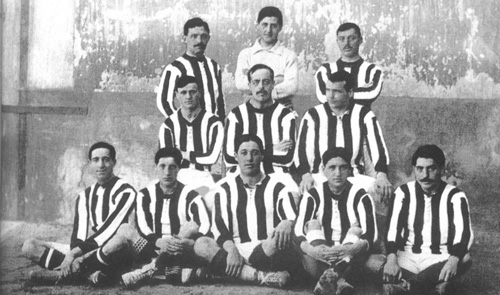
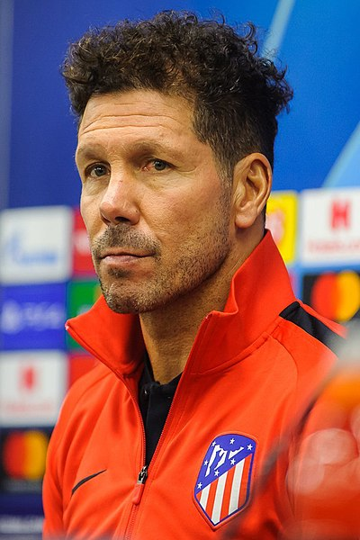
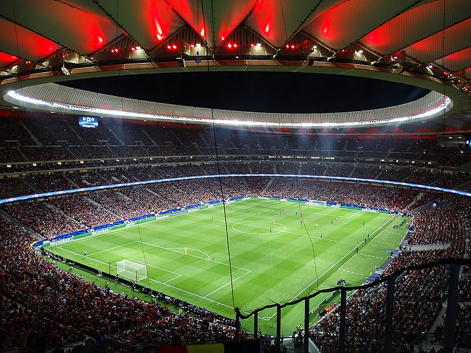

Atletico de Madrid
History
Atletico Madrid was founded on 26 April 1903,as Athletic Club Sucursal de Madrid by three Basque students living in Madrid. These founders saw the new club as a youth branch of their childhood team, Athletic Bilbao. Athletic's first ground, the Ronda de Vallecas, was in the eponymous working-class area on the south side of the city. In 1919, the Compañía Urbanizadora Metropolitana—the company that ran the underground communication system in Madrid—acquired some land, near the Ciudad Universitaria. In 1921, Athletic Madrid became independent of parent-club Athletic Bilbao and moved into a 35,800-seater stadium built by the company, the Estadio Metropolitano de Madrid.[18] The Metropolitano was used until 1966, when they moved to the new Estadio Vicente Calderón.

Awards
10 times la liga champions
10 times copa del rey champions
2 times supercopa de espana champions
3 times Europa league champions
3 times super cup champions

First team players
| Name |
player Number |
position |
| oblak |
13 |
Gk |
| grbic |
1 |
Gk |
| Jose Gimenez |
2 |
CB |
| Geoffrey Kondogbia |
4 |
CDM |
| Lucas Torreira |
5 |
CDM |
| Koke |
6 |
CM |
| João Félix |
7 |
ST |
| Saul |
8 |
CM |
| Luis Suárez |
9 |
ST |
| Angel Correa |
10 |
ST |
| Thomas Lemar |
11 |
LM |
| Renan Lodi |
12 |
Lb |
| Marcos Llorente |
14 |
CM |
| Stefan Savic |
15 |
CB |
| Héctor Herrera |
16 |
CM |
| Felipe Augusto |
18 |
CB |
| Moussa Dembélé |
19 |
ST |
| Vitolo |
20 |
LM |
| Yannick Carrasco |
21 |
LM |
| Mario Hermoso |
22 |
CB |
| Kieran Trippier |
23 |
RB |
| Šime Vrsaljko |
24 |
RB |

Head coach
Diego Simeone, coach since 23 December 2011

President
President: Enrique Cerezo Torres
Chief Executive Officer: Miguel Ángel Gil Marín. Owner of the club, he holds 56% of the stock. He is the son of former club president Jesús Gil.

Stadium
The club played their home games at the 54,990[85] seat Estadio Vicente Calderón in southern Madrid until 2017. Before this, the club played originally at the Ronda de Vallecas until 1923. After the completion of the Estadio Metropolitano de Madrid in 1923, the club moved there until the Vicente Calderón was finished in 1966.The club now plays in the renovated Wanda Metropolitano Stadium,[86] which was expanded from a 20,000 seat capacity to 68,000 after it was used for Madrid's failed bid to host the 2016 Summer Olympics. The Vicente Calderón has been demolished in July 2020, and replaced by a waterfront park at the banks of the Manzanares River in Madrid.[87] On 17 September 2017, the renovated Metropolitano Stadium hosted its first competitive match against Malaga CF, in which King Felipe VI attended. Antoine Griezmann scored the club's first goal at the stadium.
